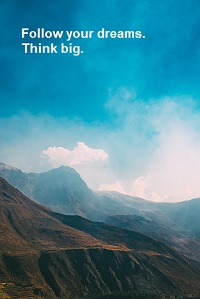

Sign-in
Sign-in
Canoeing
Canoeing is an activity which involves paddling a canoe with a single-bladed paddle. Common meanings of the term are limited to when the canoeing is the central purpose of the activity. Broader meanings include when it is combined with other activities such as canoe camping, or where canoeing is merely a transportation method used to accomplish other activities. Most present-day canoeing is done as or as a part of a sport or recreational activity. In some parts of Europe canoeing refers to both canoeing and kayaking, with a canoe being called an open canoe.
Canoes were developed by cultures all over the world, including some designed for use with sails or outriggers. Until the mid-1800s the canoe was an important means of transport for exploration and trade, and in some places it still is used as such, perhaps with the addition of an outboard motor. Where the canoe played a key role in history, such as the northern United States, Canada, and New Zealand, it remains an important theme in popular culture.
Types of Canoes
- Sprint
- Slalom and wildwater
- Marathon
- General Recreation
- Touring and camping
- Freestyle
Hiking

In the United States, Canada, the Republic of Ireland, and United Kingdom, hiking means walking outdoors on a trail, or off trail, for recreational purposes. A day hike refers to a hike that can be completed in a single day. However, in the United Kingdom, the word walking is also used, as well as rambling, while walking in mountainous areas is called hillwalking. In Northern England, Including the Lake District and Yorkshire Dales, fellwalking describes hill or mountain walks, as fell is the common word for both features there.

Hiking sometimes involves bushwhacking and is sometimes referred to as such. This specifically refers to difficult walking through dense forest, undergrowth, or bushes, where forward progress requires pushing vegetation aside. In extreme cases of bushwhacking, where the vegetation is so dense that human passage is impeded, a machete is used to clear a pathway. The Australian term bushwalking refers to both on and off-trail hiking. Common terms for hiking used by New Zealanders are tramping (particularly for overnight and longer trips), walking or bushwalking. Trekking is the preferred word used to describe multi-day hiking in the mountainous regions of India, Pakistan, Nepal, North America, South America, Iran, and the highlands of East Africa. Hiking a long-distance trail from end-to-end is also referred to as trekking and as thru-hiking in some places. In North America, multi-day hikes, usually with camping, are referred to as backpacking.
Trails - 2023/2024
National Parks (partial list)
- Banff National Park
- Cape Breton Highlands National Park
- Point Pelee National Park
Provincial Parks (partial list)
- Bronte Creek Provincial Park
- Rock Point Provincial Park
- Selkirk Provincial Park
